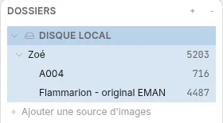
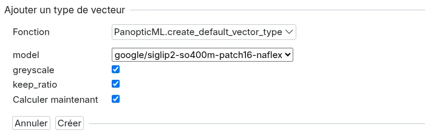
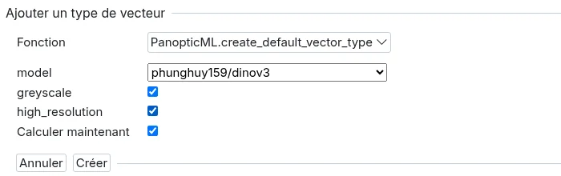
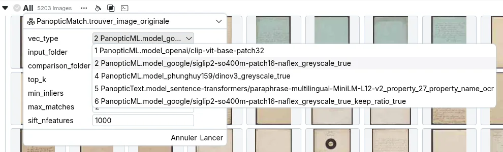
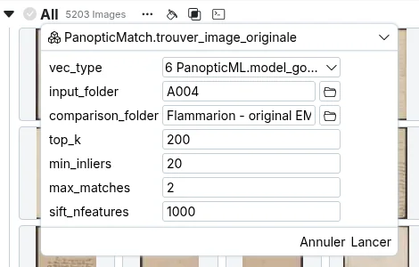
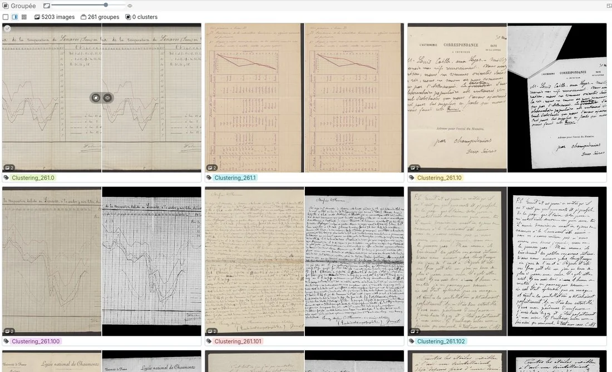
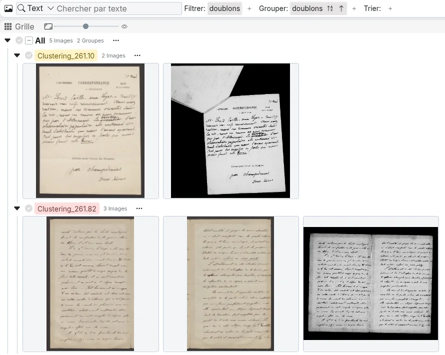

Trouver des doublons entre deux dossiers
Objectif
Pour chaque image d'un dossier, retrouver l'image qui lui correspond dans un autre dossier : l'original d'une image retouchée, la version numérisée d'une même pièce dans un autre fonds, la photographie d'une page déjà scannée ailleurs...
On utilise pour cela le plugin PanopticMATCH (voir Ajouter des plugins), qui fonctionne en deux temps :
- les vecteurs d'images présélectionnent, pour chaque image, les candidats les plus ressemblants de l'autre dossier ;
- chaque candidat est ensuite comparé à l'image par ses points d'intérêt (SIFT) : on compte les détails qui se retrouvent aux mêmes endroits dans les deux images, même si l'une est tournée, recadrée ou décolorée. Ce comptage écarte les images qui se ressemblent sans montrer la même chose.
Cette deuxième étape est ce qui distingue PanopticMATCH de la recherche d'images similaires : dans un corpus de pages manuscrites, toutes les pages se ressemblent pour un modèle de vision, mais seule la bonne page partage réellement son écriture avec l'image cherchée.
Corpus
L'exemple présenté ici porte sur la correspondance d'un fonds d'archives, disponible sous deux formes :
- A004 : 716 numérisations récentes, en couleur, une image par page ;
- Flammarion - original EMAN : 4487 images d'un ancien microfilm, en noir et blanc, où les documents sont parfois photographiés de travers, décalés, partiellement recouverts, ou en double page.
Le but est de retrouver, pour chaque numérisation de A004, l'image du microfilm qui montre le même document. C'est un cas difficile : les deux dossiers ne contiennent que des pages manuscrites de même format, et les mêmes documents y apparaissent sous des aspects très différents.
Les deux dossiers sont importés dans le même projet (voir Importer des Images) :

Calculer les bons vecteurs
Les vecteurs ne servent qu'à présélectionner les candidats, mais si la bonne image n'est pas dans cette présélection, elle ne sera jamais retrouvée : le choix du modèle compte beaucoup. Les vecteurs CLIP créés par défaut ne sont pas adaptés à ce type de corpus, il vaut mieux créer un nouveau type de vecteurs (voir Créer de nouveaux vecteurs) avec l'un des deux réglages suivants.
SigLIP2 en gardant les proportions (recommandé) : choisir le modèle google/siglip2-so400m-patch16-naflex et laisser cochée l'option keep_ratio. L'image est alors analysée avec ses proportions d'origine, au lieu d'être déformée en carré : une page en hauteur reste une page en hauteur, et une double page n'est pas écrasée.

DINOv3 en haute résolution : choisir le modèle phunghuy159/dinov3 et cocher high_resolution. L'image est analysée à 768 px au lieu de 256 px, à partir de la plus grande miniature stockée par Panoptic (1024 px dans les projets récents), ce qui permet au modèle de voir l'écriture et pas seulement la mise en page. Le calcul est en revanche nettement plus long.

Note
Les options proposées dépendent du modèle choisi : keep_ratio n'apparaît que pour SigLIP2 et high_resolution que pour DINOv3.
Tip
Quand un des dossiers est en couleur et l'autre en noir et blanc, cocher aussi greyscale : la couleur ne doit pas peser dans la comparaison, puisqu'elle dépend du support et non du document.
Temps de calcul
Garder les proportions ne coûte rien de plus avec une carte graphique NVidia ou sur processeur. Sur un Mac Apple Silicon en revanche, cette option empêche d'utiliser le Neural Engine, et le calcul peut être 2 à 3 fois plus lent : décocher keep_ratio si le temps de calcul pose problème.
Sur ce corpus, avec les réglages par défaut de PanopticMATCH, le nombre de paires retrouvées varie ainsi selon les vecteurs utilisés :
| Vecteurs | Paires retrouvées |
|---|---|
| DINOv3 | 193 |
SigLIP2 (image déformée en carré, keep_ratio décoché) |
241 |
SigLIP2 avec keep_ratio |
294 |
DINOv3 avec high_resolution |
306 |
SigLIP2 avec keep_ratio donne des résultats proches de DINOv3 en haute résolution, pour un calcul beaucoup plus rapide : c'est le réglage à essayer en premier.
Lancer la recherche
Survoler la ligne "All" en vue "Grille" et cliquer sur l'icône "exécuter" (ou passer par le menu "...") puis choisir la fonction PanopticMatch.trouver_image_originale. Dans vec_type, choisir les vecteurs calculés à l'étape précédente :

Puis renseigner les deux dossiers et cliquer sur "Lancer" :

Les paramètres
input_folder: le dossier des images dont on cherche la correspondance, ici A004 ;comparison_folder: le dossier dans lequel chercher, ici le microfilm ;top_k(100 par défaut) : nombre de candidats présélectionnés par les vecteurs pour chaque image, puis comparés par points SIFT. À augmenter (200, 300...) si des correspondances évidentes sont manquées : la bonne image n'était sans doute pas parmi les candidats. Le temps de calcul augmente en proportion ;min_inliers(20 par défaut) : nombre minimal de points concordants pour accepter une paire. À baisser (10 à 15) pour retrouver davantage de paires difficiles, au risque de faux appariements ; à augmenter pour ne garder que les paires les plus sûres ;max_matches(1 par défaut) : nombre maximal de paires par image. Mettre2quand un dossier contient des doubles pages et l'autre des pages séparées, pour que la double page soit reliée à ses deux moitiés ;sift_nfeatures(1000 par défaut) : nombre de points SIFT extraits par image. À augmenter (2000) pour des documents très denses ou des correspondances qui ne portent que sur un détail, au prix d'un calcul plus lent.
Pour ce corpus, qui mélange pages séparées et doubles pages, la recherche a été lancée avec top_k à 200 et max_matches à 2.
Tip
Les points SIFT de chaque image sont enregistrés par le plugin : relancer la recherche avec d'autres valeurs de top_k, min_inliers ou max_matches est beaucoup plus rapide que le premier lancement. On peut donc commencer avec les valeurs par défaut, puis les ajuster en regardant les résultats.
Lire et sauvegarder les résultats
Chaque correspondance forme un groupe, nommé d'après les fichiers qu'il relie, et dont le score est le nombre de points concordants : plus il est élevé, plus la correspondance est sûre. Les groupes sont triés du plus sûr au moins sûr, et les images sans correspondance sont rassemblées dans un dernier groupe. Il est conseillé de vérifier surtout les groupes en fin de liste, dont le score est proche de min_inliers.
Comme pour les clusters, ces groupes ne sont pas conservés automatiquement : l'icône de disquette à côté de "All" les enregistre dans une propriété (voir Sauvegarder un clustering), renommée ici "doublons". On peut ensuite à tout moment grouper les images selon cette propriété, par exemple en vue "Groupée" pour parcourir les 260 correspondances trouvées :

Deux exemples de cas difficiles
En filtrant la propriété "doublons" sur les tags Clustering_261.10 et Clustering_261.82 (voir Manipuler les Images à partir de leurs Propriétés), puis en groupant selon cette même propriété, on obtient deux correspondances que les vecteurs seuls ne suffisaient pas à trouver :

- Clustering_261.10 : à gauche, la numérisation en couleur d'une carte de correspondance ; à droite, la même carte sur le microfilm, en noir et blanc, inclinée, décalée dans le coin de l'image, avec une autre feuille qui la recouvre en partie. Plus de la moitié de l'image du microfilm n'appartient pas au document : sa ressemblance globale avec la numérisation est faible, mais l'écriture se retrouve trait pour trait.
- Clustering_261.82 : le recto et le verso d'un feuillet, numérisés séparément dans A004, sont tous deux reliés à une seule image du microfilm qui montre le feuillet ouvert en double page. C'est le cas que permet de traiter
max_matchesà 2.